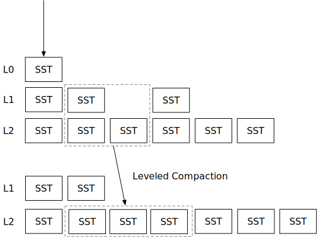

分层压缩策略

在本章中，您将：
- 实现分层压缩策略并在压缩模拟器上模拟它。
- 将分层压缩策略整合到系统中。
要复制测试用例到起始代码并运行它们，
cargo x copy-test --week 2 --day 4
cargo x scheck
在阅读本章之前，查看第二周概览可能会有所帮助，以便对压缩有一个总体了解。
任务1：分层压缩
在第2章第2天，您已经实现了简单的分层压缩策略。然而，该实现存在一些问题：
- 压缩总是包含一个完整的层级。请注意，在完成压缩之前，您不能删除旧文件，因此，您的存储引擎在压缩过程中可能会使用2倍的存储空间（如果是完全压缩）。分层压缩也有同样的问题。在本章中，我们将实现部分压缩，即从上层选择一个SST进行压缩，而不是整个层级。
- SST可能会跨过空层级进行压缩。正如您在压缩模拟器中看到的，当LSM状态为空时，引擎刷新一些L0 SST，这些SST会首先被压缩到L1，然后从L1压缩到L2，等等。一个最佳策略是直接将SST从L0放置到尽可能低的层级，以避免不必要的写放大。
在本章中，您将实现一个生产就绪的分层压缩策略。该策略与RocksDB的分层压缩相同。您需要修改：
src/compact/leveled.rs
要运行压缩模拟器，
cargo run --bin compaction-simulator leveled
任务1.1：计算目标大小
在这种压缩策略中，您需要知道每个SST的第一个/最后一个键以及SST的大小。压缩模拟器将为您设置一些模拟SST以供访问。
您需要计算层级的目标大小。假设base_level_size_mb为200MB，层级数（不包括L0）为6。当LSM状态为空时，目标大小将是：
[0 0 0 0 0 200MB]
在底层级超过base_level_size_mb之前，所有其他中间层级的目标大小将为0。这个想法是，当数据总量较小时，创建中间层级是浪费的。
当底层级达到或超过base_level_size_mb时，我们将通过从大小中除以level_size_multiplier来计算其他层级的目标大小。假设底层级包含300MB数据，且level_size_multiplier=10。
0 0 0 0 30MB 300MB
此外，最多一个层级可以有低于base_level_size_mb的正目标大小。假设我们现在在最后一层有30GB文件，目标大小将是，
0 0 30MB 300MB 3GB 30GB
请注意，在这种情况下，L1和L2的目标大小为0，而L3是唯一一个目标大小低于base_level_size_mb的层级。
任务1.2：决定基础层级
现在，让我们解决简单分层压缩策略中SST可能会跨过空层级进行压缩的问题。当我们用较低层级压缩L0 SST时，我们不直接将其放入L1。相反，我们将其与第一个目标大小 > 0的层级进行压缩。例如，当目标层级大小为：
0 0 0 0 30MB 300MB
如果L0 SST的数量达到level0_file_num_compaction_trigger阈值，我们将用L5 SST压缩L0 SST。
现在，您可以生成L0压缩任务并运行压缩模拟器。
--- 刷新后 ---
L0 (1): [23]
L1 (0): []
L2 (0): []
L3 (2): [19, 20]
L4 (6): [11, 12, 7, 8, 9, 10]
...
---